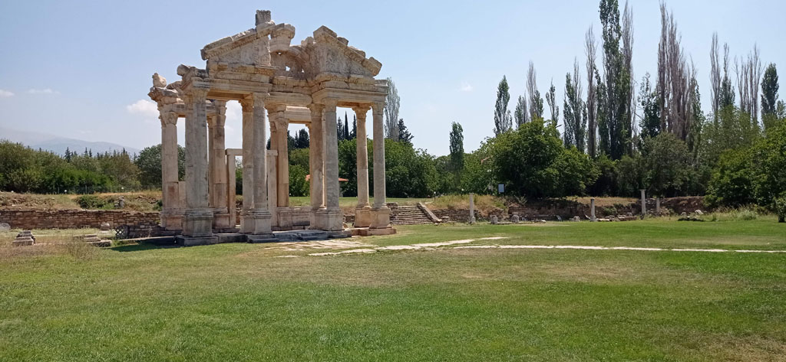

/ Aphrodisias

6h15 réveil
6h30 sur le toit à regarder passer les montgolfières.
7h45 réveil e la troupe.
8h00 petit déjeuner de l’hôtel
9h10 Notre chauffeur de taxi, un petit papi tout vouté vient nous chercher.
10h30 Arrivée sur le site d’Aphrodisias.
La visite est sublime (280TL / personne) , nous sommes totalement seuls que ce soit sur le site où dans le musée.
14h30 Il est temps de revenir à notre hôtel de Pamukkale.
15h45 direction la piscine.
19h30 direction le centre ville. Nous faisons le tour de ce bourg sinistre pour finalement revenir manger à notre hôtel.